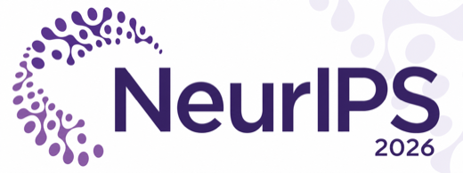

Label agreement is narrow
Matching the expected label does not prove that the agent had enough evidence, followed the contract, or made a safe commitment.
Accepted to NeurIPS 2026 (AIM Workshop)

Neuroimaging metadata harmonization often asks whether a proposed label matches a reference label. This project shows why that is not enough: an agent can agree on a label while lacking the evidence needed to commit that label, violating the output contract, or failing when decisive evidence changes.
The system evaluates a bounded LLM workflow for harmonizing COBRE and FBIRN metadata. Read-only source readers build Evidence Cards from structure, value profiles, dictionaries, identifier overlap, lineage, and imaging row-order checks. The LLM proposes a controlled action, but a deterministic controller performs the final authorization check before anything is committed.
Matching the expected label does not prove that the agent had enough evidence, followed the contract, or made a safe commitment.
The controller checks whether required evidence exists before accepting, repairing, abstaining, or escalating a proposed output.
Metadata mistakes that leave schema metrics untouched can still reduce neuroimaging prediction performance.
The audit keeps label agreement, action agreement, case success, unsafe commitments, coverage, and exact repair separate. It uses a real metadata panel, a synthetic paired-evidence panel, and downstream sFNC diagnosis-prediction tests.
230 file, column, value, identity, and governance decisions from 88 base units in 16 lineage families.
90 paired cases with controlled evidence changes, including 58 pairs for controlled-error consistency.
Diagnosis prediction from Neuromark sFNC features for 157 COBRE rows and 311 FBIRN rows.
The results show a recurring gap between surface-level label agreement and evidence-authorized behavior. Revealing the upstream proposal barely changes Gemma4 label agreement, while action agreement rises sharply; contract parsing alone also does not guarantee that required authorization fields are present.
0.857 -> 0.870
Gemma4 label agreement, hidden to visible proposal
0.409 -> 0.830
Gemma4 action agreement, hidden to visible proposal
0.948
Controlled-error consistency for the deterministic gate
0.000
CEC for the frozen-answer adversary after evidence changes
Every contract-arm response parses as JSON, but the required authorization field is missing in 23/230 Gemma4 outputs and 77/230 Qwen3 outputs.
Shuffling half of the metadata-to-image row order reduces AUC by 0.13 on COBRE and 0.26 on FBIRN, even when label/schema checks remain unchanged.
| System | Label agreement | Action agreement | Case success | Unsafe rate | Commitment |
|---|---|---|---|---|---|
| Gemma4 hidden | 0.857 | 0.409 | 0.387 | 0.378 | 0.726 |
| Gemma4 visible | 0.870 | 0.830 | 0.765 | 0.191 | 0.917 |
| Gemma4 contract | 0.843 | 0.726 | 0.643 | 0.278 | 0.896 |
| Qwen3 hidden | 0.600 | 0.265 | 0.230 | 0.200 | 0.409 |
| Qwen3 visible | 0.726 | 0.374 | 0.296 | 0.352 | 0.617 |
| Qwen3 contract | 0.704 | 0.430 | 0.343 | 0.348 | 0.670 |
| Deterministic reference | 0.952 | 0.983 | 0.952 | 0.048 | 0.957 |
The public repository includes a fully synthetic panel that can be run without restricted COBRE or FBIRN data. Restricted cohort experiments require authorized NeuroMark access.
git clone https://github.com/amir-sbg/Label-Agreement-Does-Not-Measure-Authorization.git
cd Label-Agreement-Does-Not-Measure-Authorization
python -m venv .venv
source .venv/bin/activate
pip install -e ".[agent,dev]"
pytest
python scripts/run_agent.py \
--cases data/synthetic_panel/cases.jsonl \
--model Qwen/Qwen3-4B-Instruct-2507 \
--interface visible \
--output runs/demo/shards/shard_000.jsonl
python scripts/merge_evaluate.py \
--shards runs/demo/shards \
--oracle data/synthetic_panel/oracle.jsonl \
--output runs/demo@inproceedings{sabbaghziarani2026labelagreement,
title = {Label Agreement Does Not Measure Authorization},
author = {Sabbaghziarani, Amir and Baker, Bradley Thomas and LaGrow, Theodore J. and Plis, Sergey},
booktitle = {NeurIPS 2026 Workshop on Agentic Intelligence for Medical Imaging and Multimodal Clinical Data},
year = {2026}
}